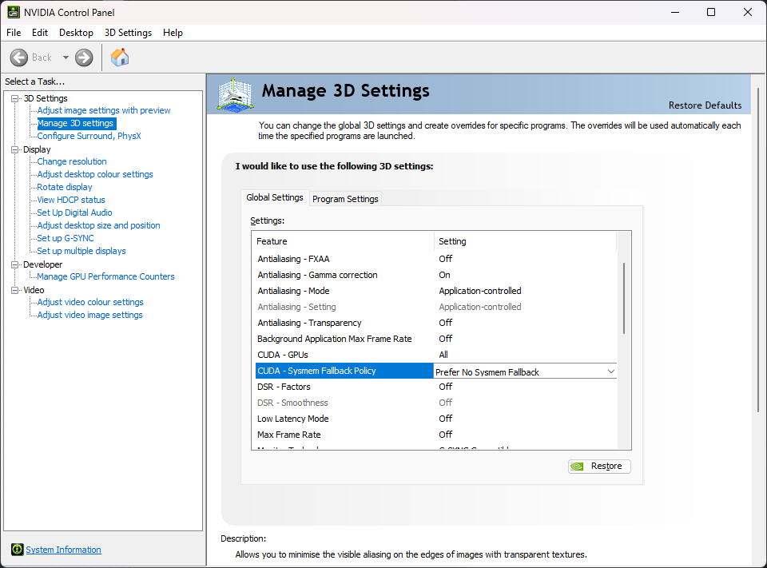

Low VRAM mode
As of v5.6.0, Invoke has a low-VRAM mode. It works on systems with dedicated GPUs (Nvidia GPUs on Windows/Linux and AMD GPUs on Linux).
This allows you to generate even if your GPU doesn't have enough VRAM to hold full models. Most users should be able to run even the beefiest models - like the ~24GB unquantised FLUX dev model.
Enabling Low-VRAM mode#
To enable Low-VRAM mode, add this line to your invokeai.yaml configuration file, then restart Invoke:
Windows users should also disable the Nvidia sysmem fallback.
It is possible to fine-tune the settings for best performance or if you still get out-of-memory errors (OOMs).
How to find invokeai.yaml
The invokeai.yaml configuration file lives in your install directory. To access it, run the Invoke Community Edition launcher and click the install location. This will open your install directory in a file explorer window.
You'll see invokeai.yaml there and can edit it with any text editor. After making changes, restart Invoke.
If you don't see invokeai.yaml, launch Invoke once. It will create the file on its first startup.
Details and fine-tuning#
Low-VRAM mode involves 4 features, each of which can be configured or fine-tuned:
- Partial model loading (
enable_partial_loading) - PyTorch CUDA allocator config (
pytorch_cuda_alloc_conf) - Dynamic RAM and VRAM cache sizes (
max_cache_ram_gb,max_cache_vram_gb) - Working memory (
device_working_mem_gb) - Keeping a RAM weight copy (
keep_ram_copy_of_weights)
Read on to learn about these features and understand how to fine-tune them for your system and use-cases.
Partial model loading#
Invoke's partial model loading works by streaming model "layers" between RAM and VRAM as they are needed.
When an operation needs layers that are not in VRAM, but there isn't enough room to load them, inactive layers are offloaded to RAM to make room.
Enabling partial model loading#
As described above, you can enable partial model loading by adding this line to invokeai.yaml:
PyTorch CUDA allocator config#
The PyTorch CUDA allocator's behavior can be configured using the pytorch_cuda_alloc_conf config. Tuning the allocator configuration can help to reduce the peak reserved VRAM. The optimal configuration is dependent on many factors (e.g. device type, VRAM, CUDA driver version, etc.), but switching from PyTorch's native allocator to using CUDA's built-in allocator works well on many systems. To try this, add the following line to your invokeai.yaml file:
A more complete explanation of the available configuration options is here.
Dynamic RAM and VRAM cache sizes#
Loading models from disk is slow and can be a major bottleneck for performance. Invoke uses two model caches - RAM and VRAM - to reduce loading from disk to a minimum.
By default, Invoke manages these caches' sizes dynamically for best performance.
Fine-tuning cache sizes#
Prior to v5.6.0, the cache sizes were static, and for best performance, many users needed to manually fine-tune the ram and vram settings in invokeai.yaml.
As of v5.6.0, the caches are dynamically sized. The ram and vram settings are no longer used, and new settings are added to configure the cache.
Most users will not need to fine-tune the cache sizes.
But, if your GPU has enough VRAM to hold models fully, you might get a perf boost by manually setting the cache sizes in invokeai.yaml:
# The default max cache RAM size is logged on InvokeAI startup. It is determined based on your system RAM / VRAM.
# You can override the default value by setting `max_cache_ram_gb`.
# Increasing `max_cache_ram_gb` will increase the amount of RAM used to cache inactive models, resulting in faster model
# reloads for the cached models.
# As an example, if your system has 32GB of RAM and no other heavy processes, setting the `max_cache_ram_gb` to 28GB
# might be a good value to achieve aggressive model caching.
max_cache_ram_gb: 28
# The default max cache VRAM size is adjusted dynamically based on the amount of available VRAM (taking into
# consideration the VRAM used by other processes).
# You can override the default value by setting `max_cache_vram_gb`.
# CAUTION: Most users should not manually set this value. See warning below.
max_cache_vram_gb: 16
Max safe value for max_cache_vram_gb
Most users should not manually configure the max_cache_vram_gb. This configuration value takes precedence over the device_working_mem_gb and any operations that explicitly reserve additional working memory (e.g. VAE decode). As such, manually configuring it increases the likelihood of encountering out-of-memory errors.
For users who wish to configure max_cache_vram_gb, the max safe value can be determined by subtracting device_working_mem_gb from your GPU's VRAM. As described below, the default for device_working_mem_gb is 3GB.
For example, if you have a 12GB GPU, the max safe value for max_cache_vram_gb is 12GB - 3GB = 9GB.
If you had increased device_working_mem_gb to 4GB, then the max safe value for max_cache_vram_gb is 12GB - 4GB = 8GB.
Most users who override max_cache_vram_gb are doing so because they wish to use significantly less VRAM, and should be setting max_cache_vram_gb to a value significantly less than the 'max safe value'.
Working memory#
Invoke cannot use all of your VRAM for model caching and loading. It requires some VRAM to use as working memory for various operations.
Invoke reserves 3GB VRAM as working memory by default, which is enough for most use-cases. However, it is possible to fine-tune this setting if you still get OOMs.
Fine-tuning working memory#
You can increase the working memory size in invokeai.yaml to prevent OOMs:
Operations may request more working memory
For some operations, we can determine VRAM requirements in advance and allocate additional working memory to prevent OOMs.
VAE decoding is one such operation. This operation converts the generation process's output into an image. For large image outputs, this might use more than the default working memory size of 3GB.
During this decoding step, Invoke calculates how much VRAM will be required to decode and requests that much VRAM from the model manager. If the amount exceeds the working memory size, the model manager will offload cached model layers from VRAM until there's enough VRAM to decode.
Once decoding completes, the model manager "reclaims" the extra VRAM allocated as working memory for future model loading operations.
Keeping a RAM weight copy#
Invoke has the option of keeping a RAM copy of all model weights, even when they are loaded onto the GPU. This optimization is on by default, and enables faster model switching and LoRA patching. Disabling this feature will reduce the average RAM load while running Invoke (peak RAM likely won't change), at the cost of slower model switching and LoRA patching. If you have limited RAM, you can disable this optimization:
# Set to false to reduce the average RAM usage at the cost of slower model switching and LoRA patching.
keep_ram_copy_of_weights: false
Disabling Nvidia sysmem fallback (Windows only)#
On Windows, Nvidia GPUs are able to use system RAM when their VRAM fills up via sysmem fallback. While it sounds like a good idea on the surface, in practice it causes massive slowdowns during generation.
It is strongly suggested to disable this feature:
- Open the NVIDIA Control Panel app.
- Expand 3D Settings on the left panel.
- Click Manage 3D Settings in the left panel.
- Find CUDA - Sysmem Fallback Policy in the right panel and set it to Prefer No Sysmem Fallback.

Invoke does the same thing, but better
If the sysmem fallback feature sounds familiar, that's because Invoke's partial model loading strategy is conceptually very similar - use VRAM when there's room, else fall back to RAM.
Unfortunately, the Nvidia implementation is not optimized for applications like Invoke and does more harm than good.
Troubleshooting#
Windows page file#
Invoke has high virtual memory (a.k.a. 'committed memory') requirements. This can cause issues on Windows if the page file size limits are hit. (See this issue for the technical details on why this happens: https://github.com/invoke-ai/InvokeAI/issues/7563).
If you run out of page file space, InvokeAI may crash. Often, these crashes will happen with one of the following errors:
- InvokeAI exits with Windows error code
3221225477 - InvokeAI crashes without an error, but
eventvwr.mscreveals an error with code0xc0000005(the hex equivalent of3221225477)
If you are running out of page file space, try the following solutions:
- Make sure that you have sufficient disk space for the page file to grow. Watch your disk usage as Invoke runs. If it climbs near 100% leading up to the crash, then this is very likely the source of the issue. Clear out some disk space to resolve the issue.
- Make sure that your page file is set to "System managed size" (this is the default) rather than a custom size. Under the "System managed size" policy, the page file will grow dynamically as needed.